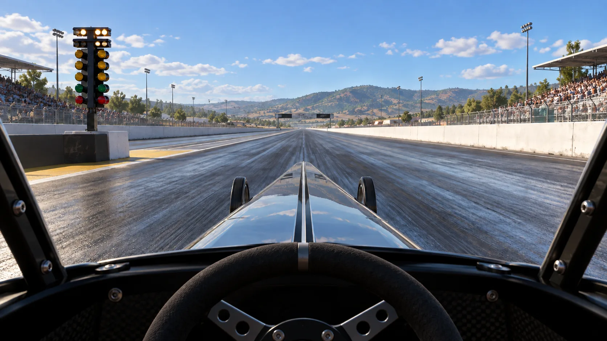

SwitchMate / Drift-Signal
First Run

The gold outline moves between choices.
How to play
Wait for the gold outline to reach your choice, then press and release your switch (Space or Enter), or tap the large selection pad. You can also tap any choice directly. All menus scan. Pause is included in the scan. Escape pauses the race. Tab stops scanning for ordinary keyboard navigation; the selection pad restarts scanning.
Wrong gears add 2 seconds and let you try again. Race time is a game score: 10 seconds plus penalties, not real elapsed time. Extra-scan penalties are off by default. If enabled, each completed scan cycle after the first adds 0.5 seconds. Settings, pauses, and loading never add race time.
This fictional five-speed trainer uses dragster artwork. Real Top Fuel dragsters use direct drive; Pro Stock racers use five-speed manuals. NHRA guide.